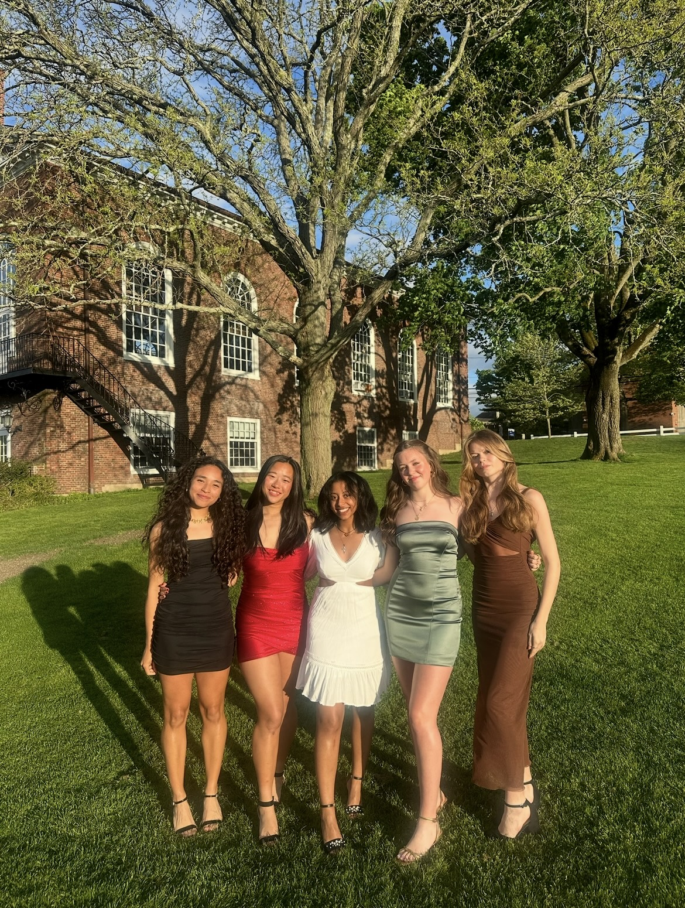

In about 8 months I will be walking across the Milton Academy quad for my graduation. While I am scared for what the future holds, I know it will be amazing.
I am so excited for what comes after graduation, but I'm also be very sad to leave my friends.
I will never forget the friendships I made throughout my time at Milton, and I know this won't be the last year I see them.